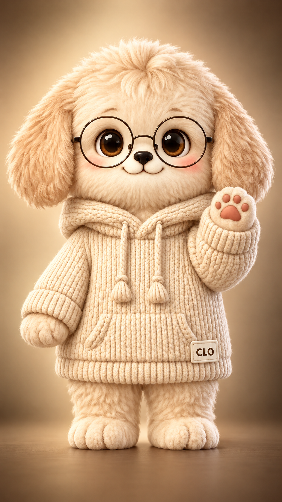

WHO DOES WHAT
클로
&
루카
클로
는 만들고 확인해요.
루카
는 정하고 공개해요.

클로
코딩 전문 분석가
루카
앱개발자 · 작가 · 다락방대표
일
클로가 해요
루카가 해요
기획
선택지를 꺼내고 추천해요
뭘, 왜 만들지 정해요
그림
프롬프트 작성, 생성, 글자 합성
직접 그리기, 그림체 고르기
앱·게임
코드 작성, 오류 수정, 배포
아이디어 내기, 직접 써보기
글
초안 쓰기, 기록 정리
실제 경험 주기, 고쳐서 게시
영상
대본, 내레이션, 편집 자동화
소재 고르기, 보고 판단, 업로드
공모전
규정 확인, 응모 자료 준비
응모 결정, 실제 접수
강의
슬라이드와 대본 제작
화면 캡처, 현장 강의
돈·계정
비용을 미리 알리고 승인받아요
결제, 로그인, 사용 승인
기억
메모리 정리, 커밋으로 저장
방향 잡기, 틀린 기억 고쳐주기
한 작품이 나오기까지
루카
떠올리고
→
클로
만들고
→
루카
확인하고
→
클로
고치고
→
루카
공개해요
손발은 클로
,
마음과 마지막 버튼은 루카
예요.
완벽보다 완성을 · 2026년 11월 4일까지의 작업 기록으로 정리했어요.